| 今日の主なイベント |
| 帰国 |
| 朝 |
06:00
起床。朝風呂に入る。
デジカメ画像の整理。
フロント横のビジネスセンターでメールチェック。
空港までの無料送迎バスがあるらしいので、利用することに。
| 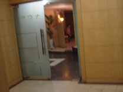 | 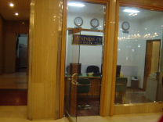 | 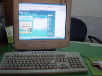 |
| サウナ | ビジネスセンター | PC |
| 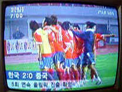 |
| 五輪出場決定 |
| 金海国際空港へ |
08:15
チェックアウト。
08:20
送迎バスに乗る。満員。
| 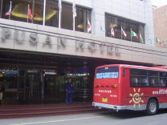 |  |
 |
| ホテル前 | 送迎バス | バス車内 |
結構揺れる。
日曜の朝ということで、道路は空いていた。
08:55
空港に到着。小さい空港だ。
| 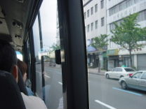 | 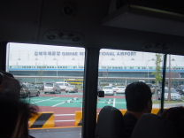 | 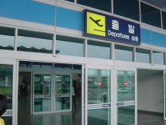 |
| ガラ空き | 空港 | 入口 |
| 金海国際空港 |
大韓航空のカウンターでチェックイン。
座席の希望は聞かれず。
荷物重量16.1kg。
| 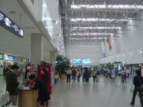 | 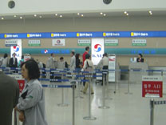 | 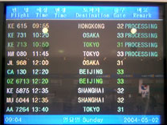 |
| 空港内 | 大韓航空カウンター | KE713便 |
お土産を購入。全部で83100W。
| 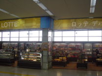 | 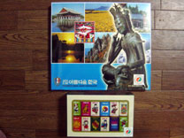 |  |
| ロッテデパート | チョコ | 海苔 |
| 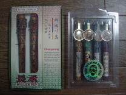 | 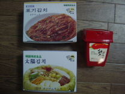 |
| ボールペン | キムチ |
ネット端末があった。しかも無料だ。
１台目は故障中らしく、再起動がかかってしまう。今時Windows98だった。
隣の台があいたので、そっちに移る。
キーボードの入力がハングルになっていて焦ったが、英語に切り替え。
残念ながら日本語フォントはインストール不可らしく、日本語が読めず。
仕方ないので、英語サイトをいくつか閲覧。
| 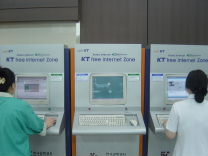 | 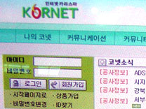 | 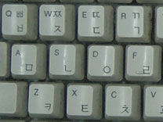 |
| ネット端末 | ハングル | ハングル対応 |
9:42
することもなくなったので、出国ゲートへ。
ここで係員に止められてしまった。
何事かと思ったら、空港利用料を払わなければいけないらしい。
最近では航空券購入時に払うことがほとんどなので、面食らった。
銀行カウンターで空港利用券を購入。12000W
| 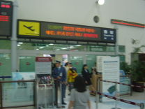 | 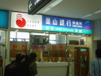 | 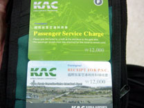 |
| 出国ゲート | 釜山銀行 | 空港利用券 |
X線検査は緩い。
出国審査では何も聞かれず。
| 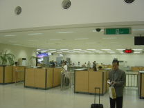 | 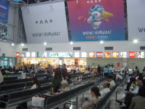 |  |
| 出国審査 | ゲート前 | 市内免税品受渡場 |
小さい本屋で新聞×2購入。2000W
残念ながら今日発売分の新聞はなかった。
| 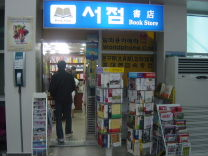 | 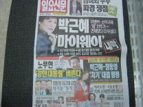 | 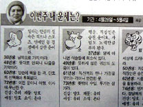 |
| 書店 | 1面 | 干支占い |
| 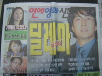 | 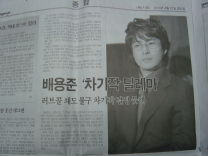 | 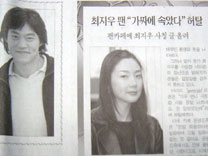 |
| 1面 | ヨン様 | チェ・ジウ |
| 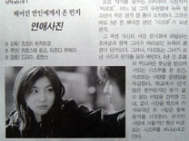 | 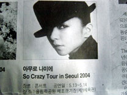 | 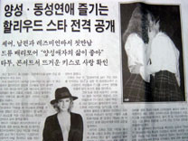 |
| 広末 | 安室ソウル公演 | タトゥ |
小腹が空いたので、チーズバーガー購入。2500W
お土産にお菓子を購入。4000W
| 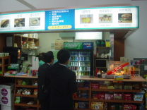 | 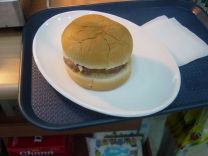 | 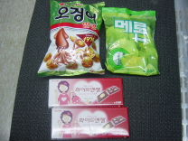 |
| 売店 | チーズバーガー | お菓子 |
韓国ウォンを使い切れなかったので、円に再両替。
余りでお菓子購入。4100W
| 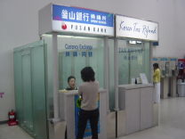 | 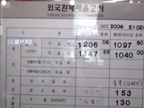 | 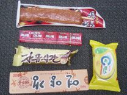 |
| 両替 | レート | お菓子 |
| フライト |
10:35
搭乗。
| 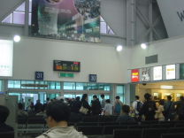 | 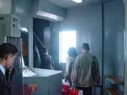 | 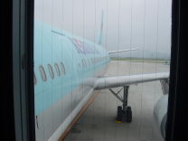 |
| 搭乗ゲート | 搭乗 | KE713便 |
座席は2-4-2配列の窓側。隣の席はいないようだ。機体はA300-600。
結構空いていて、4割くらい？
特に真ん中の4列はほとんど空席。
安い席はキャンセル待ちだったのに。
テレビは付いていないようだ。
ウトウトしていたら、いつの間にか離陸していた。
| 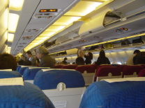 | 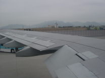 | 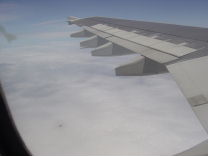 |
| 機内 | 主翼 | 上空 |
予定飛行時間は1時間35分。
九州とほとんど変わらない。
日本語のアナウンスが中途半端に片言。
昼食はサンドイッチ＆寿司。
サンドイッチはしょっぱくてマズイ。
PCでデータ整理して過ごす。
飛行機から富士山を見たのは初めてだったかな？
12:39
着陸。
少し曇っているが、暑そうだ。
| 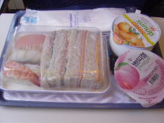 | 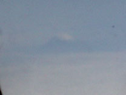 | 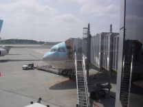 |
| サンドイッチ＆寿司 | 富士山 | 降機 |
| 帰宅 |
サーモグラフィ検査はまだやっていた。
意外にも空港はガラ空きで、入国審査は待ち時間ゼロ。
荷物宅配を頼む。
| 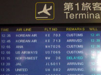 | 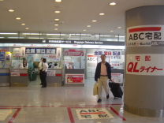 |
| KE713便 | 宅配 |
16:50
寄り道して帰宅。
| 韓国旅行まとめ |
アジアへの旅行は久しぶりだったので、欧米と違って新鮮な面があった。
●良い所
・とにかく近い。当然時差ボケもなく楽。
・治安はまあまあ。
・日本語が結構通じる。
・日本に近い生活習慣（チップ不要、コンビニ完備、店で水が出てくる、トイレ多いなど）
・物価が安い。
・日本人が多くてもパッと見では分からないこと。
●困った所
・なんだかんだでハングル中心。
ハングルに慣れないと目がクラクラする。来日する外人はこんな感じなのかな。
新聞などを見ても訳分からない。
自動翻訳が使えないWebが結構ある。
・機械でのカード使用が不安定。
機会があれば、もう一度行ってもいいかな～（次のワールドツアーか？）